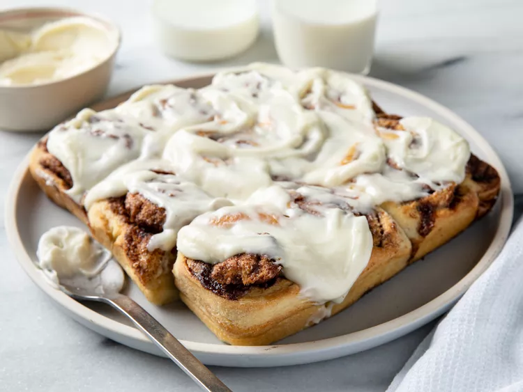

Cinnamon Rolls

Description
A from-scratch cinnamon roll recipe that's quick and does not require yeast.
Ingredients
- 4 tablespoons butter, melted, divided
-
Dough
- 2 cups all-purpose flour
- 2 tablespoons white sugar
- 2 teaspoons baking powder
- 1 teaspoon salt
- 3 tablespoons butter, softened
- 3/4 cup milk
- 1 egg
-
Filling
- 1/2 cup white sugar
- 1/2 cup brown sugar
- 1 tablespoon ground cinnamon
-
Cream Cheese Frosting
- 1 cup confectioners' sugar
- 4 ounces cream cheese, softened
- 1/4 cup butter softened
- 1/2 teaspoon vanilla extract
Steps
- Preheat the oven to 400 degrees F (200 degrees C). Brush a 9-inch square baking dish with 2 tablespoons of
the melted butter
- to make the dough: Whisk flour, 2 tablespoons white sugar, baking powder, and salt together ina large bowl.
Work 3 tablesppons softened butter into flour mixture using your hands
- Beat milk and egg together in another bowl; pour into flour-butter mixture and stir with a rubber spatula
until a soft dough forms
- Turn dough out onto a well-floured work surface and roll dough into a 1/4-inch thick rectangle. Brush
surface of dough with remaining 2 tablespoons melted butter
- To make the filling: Whisk 1/2 cup white sugar, brown sugar, and cinnamon together in a small bowl. Sprinkle
1/2 of the cinnamon sugar mixture in the bottom of the prepared baking dish. Sprinkle remaining cinnamon
sugar over butter-brushed dough
- Roll dough around filling to form a log; cut log into 18 rolls and place rolls in the prepared baking dish
- Bake in the preheated oven until rolls are set, 20 to 25 minutes
- To make the frosting: Beat confectioners' sugar, cream cheese, 1/4 cup softened butter, and vanilla extract
together in a bowl until frosting is smooth
- Top hot cinnamon rolls with cream cheese frosting
- Enjoy!